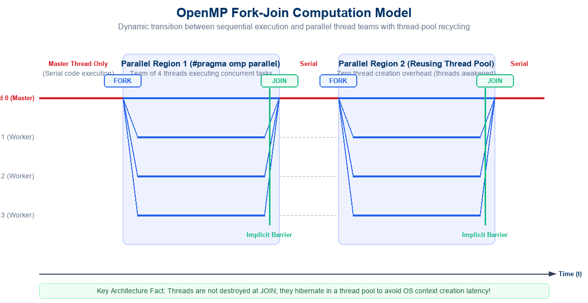
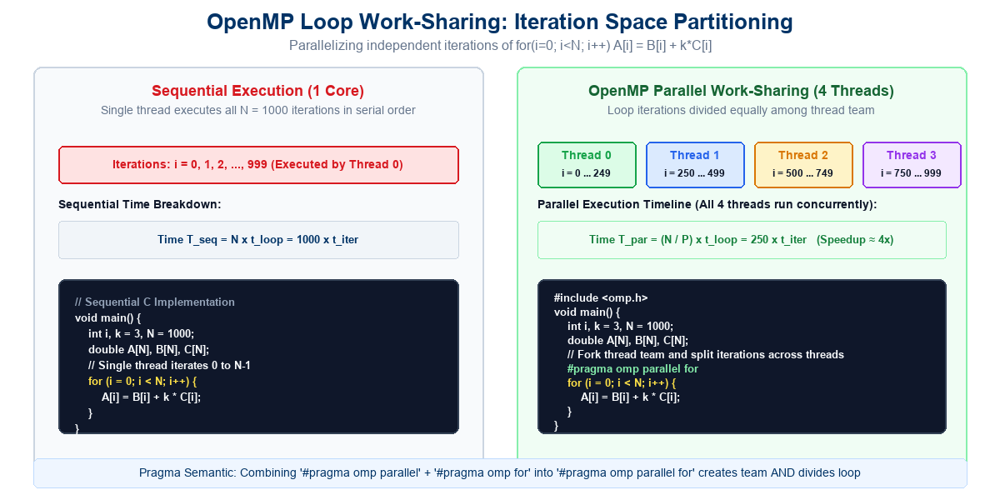
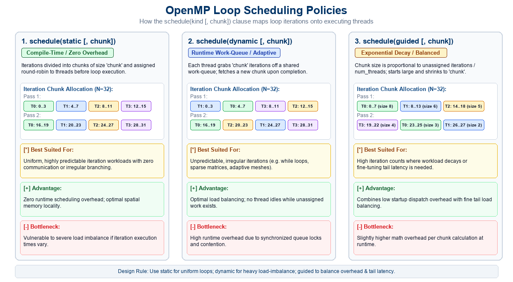
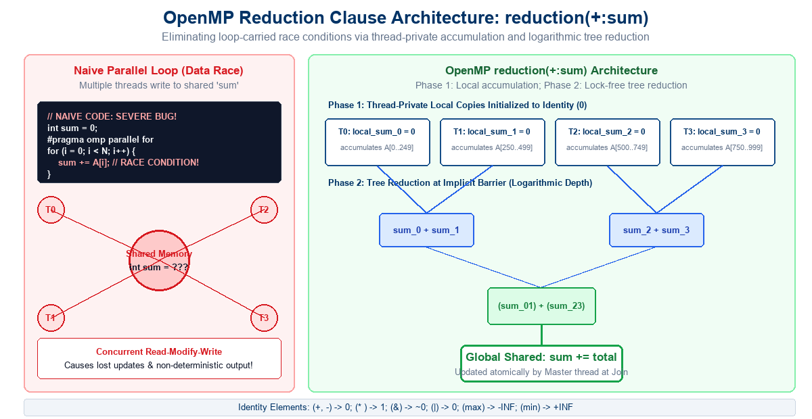
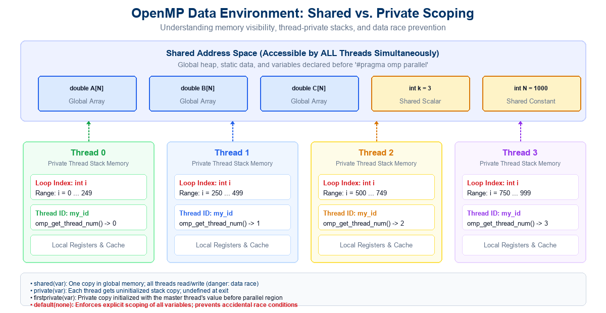

#pragma omp ....<omp.h> and compilation flags (-fopenmp).#pragma omp parallel for):
schedule clause):
schedule(static [, chunk]): Predictable round-robin mapping.schedule(dynamic [, chunk]): Work-queue dynamic load balancing.schedule(guided [, chunk]): Exponentially decaying chunk sizes.shared vs. private):
shared, private, firstprivate, lastprivate, default(none).reduction Clause:
sum += A[i]).Modern computing systems—from laptops to supercomputer nodes—are fundamentally shared-memory multiprocessor architectures:
Fundamental Question: How can software developers write parallel programs that exploit multi-core CPUs without getting bogged down in low-level OS thread management, mutual exclusion locks, and race conditions?
Historically, programmers had to choose between low-level thread APIs and high-level compiler abstractions:
| Feature / Dimension | POSIX Threads (Pthreads) | OpenMP (Open Multi-Processing) |
|---|---|---|
| Paradigm | Explicit library API (pthread_create, pthread_join) |
Directive-based compiler pragmas (#pragma omp ...) |
| Level of Abstraction | Low-level; hardware/OS thread control | High-level; declarative parallelization |
| Portability | Primarily Unix/Linux systems | Multiplatform (Linux, Windows, macOS, Unix) |
| Incremental Parallelism | Impossible: Requires complete code restructuring | Seamless: Parallelize loop-by-loop incrementally |
| Code Verbosity | High (dozens of boilerplate setup lines) | Extremely Low (often a single pragma line!) |
| Thread Lifecycle | Programmer manages thread allocation and destruction | Runtime engine manages thread-pool automatically |
| Work Distribution | Programmer computes index ranges manually | Automatic work-sharing constructs (parallel for) |
| Languages Supported | C and C++ | C, C++, and Fortran |
OpenMP Philosophy: Start with a correct, verified sequential program. Identify performance bottlenecks (computationally heavy loops), annotate them with compiler directives, and let the compiler and runtime generate high-performance parallel machine code!
OpenMP programs execute according to the Fork-Join Model of Concurrency:
#pragma omp parallel)#pragma omp parallel, the Master Thread creates or awakens a team of concurrent threads.} of the parallel region, OpenMP enforces an implicit synchronization barrier.
OpenMP Fork-Join Model: Alternating sequential execution by Master Thread (T0) and concurrent execution by a team of worker threads (T0–T3), with thread-pool recycling across parallel regions
In C and C++, OpenMP directives are written using the standard C preprocessor #pragma mechanism:
#pragma omp.#pragma omp directives, ensuring seamless serial portability!parallel, for, sections, single, barrier, atomic, critical.shared, private), scheduling (schedule), reduction (reduction), conditional execution (if).{ ... } block. Must have single entry and single exit.Header File:
Compiler Flags:
GCC / Clang: -fopenmp
MS Visual Studio: /openmp
Intel oneAPI: -qopenmp
Conditional Compilation:
Most scientific and engineering applications spend over 90% of execution time inside tight numerical loops:
// Sequential Program (Single Core)
void main()
{
int i, k = 3, N = 1000;
double A[N], B[N], C[N];
// Single thread iterates sequentially
for (i = 0; i < N; i++) {
A[i] = B[i] + k * C[i];
}
}#include <omp.h>
void main()
{
int i, k = 3, N = 1000;
double A[N], B[N], C[N];
// Parallelize loop across thread team
#pragma omp parallel for
for (i = 0; i < N; i++) {
A[i] = B[i] + k * C[i];
}
}#pragma omp parallel for forks a team of threads.Notice the Elegance: We converted a sequential program into a high-performance multi-threaded parallel program by adding exactly one header file and one compiler directive!

Loop Work-Sharing: Sequential execution of N=1000 iterations on 1 core vs. OpenMP parallel execution partitioning 250 iterations across 4 threads
To allow OpenMP to partition loop iterations deterministically, loops must adhere to the Canonical Loop Form:
index):
start, end, step):
Early Exits (break, return, goto):
While Loops & Pointer Chasing:
while (curr != NULL)) cannot be parallelized with standard omp for (must use OpenMP tasks).Combined Construct: #pragma omp parallel for is syntactic sugar for a #pragma omp parallel construct immediately enclosing a #pragma omp for work-sharing construct!
OpenMP constructs are grouped into five primary functional categories:
#pragma omp parallel:
#pragma omp for:
#pragma omp sections:
#pragma omp single:
shared(list): Shared global access.private(list): Thread-private uninitialized copy.firstprivate(list): Private copy initialized from master.default(none): Enforces explicit variable scoping.#pragma omp barrier: Explicit team rendezvous.#pragma omp critical: Mutual exclusion lock.#pragma omp atomic: Hardware-level memory update.Besides compiler directives, OpenMP provides a rich Runtime API and Environment Variable control:
#include <omp.h> required:
omp_get_num_threads():
omp_set_num_threads(int n):
omp_get_thread_num():
omp_get_wtime():
omp_get_num_procs():
export OMP_NUM_THREADS=8
export OMP_SCHEDULE="dynamic,4"
schedule(runtime) is specified.export OMP_PROC_BIND=true
export OMP_DYNAMIC=false
Hierarchy of Thread Precedence: Code with num_threads(N) clause overrides omp_set_num_threads(N), which in turn overrides the shell’s OMP_NUM_THREADS environment variable!
schedule ClauseWhen parallelizing a loop with #pragma omp for, how are iterations distributed to threads? The schedule clause controls this mapping:
schedule(static [, chunk])chunk.chunk is omitted, the entire loop of size \(N\) is divided into \(P\) contiguous chunks of size \(\approx N/P\).schedule(dynamic [, chunk])chunk.A third fundamental scheduling policy bridges the gap between static and dynamic overhead:
schedule(guided [, chunk])chunk size (default = 1).schedule(runtime) & schedule(auto)schedule(runtime):
OMP_SCHEDULE.schedule(auto):

OpenMP Loop Scheduling Policies: Comparison of Static (round-robin), Dynamic (work-queue), and Guided (exponential decay) chunk mapping across 4 threads
Consider the ubiquitous task of computing the sum of array elements:
sum updated by iteration \(i-1\), adds \(A[i]\), and writes back to sum.// NAIVE CODE: CATASTROPHIC BUG!
int sum = 0;
#pragma omp parallel for
for (i = 0; i < N; i++) {
sum += A[i]; // SEVERE DATA RACE!
}sum += A[i] is not atomic! It compiles to 3 assembly instructions:
LOAD R1, [sum]ADD R1, A[i]STORE R1, [sum]reduction ClauseTo solve loop accumulations efficiently without locking, OpenMP provides the specialized reduction clause:
#include <omp.h>
int sum = 0;
// Correct, high-performance parallel reduction
#pragma omp parallel for reduction(+:sum)
for (i = 0; i < N; i++) {
sum += A[i];
}The OpenMP standard mandates specific initialization identity values for each supported reduction operator:
| Operator | Meaning / Operation | Initial Value (Identity) | C/C++ Example Syntax |
|---|---|---|---|
+ |
Arithmetic Addition | 0 |
reduction(+:sum) |
* |
Arithmetic Multiplication | 1 |
reduction(*:product) |
- |
Arithmetic Subtraction | 0 |
reduction(-:diff) |
& |
Bitwise AND | ~0 (all 1s) |
reduction(&:mask) |
\| |
Bitwise OR | 0 |
reduction(\|:flags) |
^ |
Bitwise XOR | 0 |
reduction(^:checksum) |
&& |
Logical AND | 1 (true) |
reduction(&&:all_valid) |
\|\| |
Logical OR | 0 (false) |
reduction(\|\|:any_found) |
max |
Maximum Value | \(-\infty\) (Smallest representable) | reduction(max:max_val) |
min |
Minimum Value | \(+\infty\) (Largest representable) | reduction(min:min_val) |
Floating-Point Associativity Note: Floating-point addition is mathematically non-associative due to rounding: \((a + b) + c \neq a + (b + c)\). Parallel tree reduction evaluates sums in a different order than sequential execution, which may produce tiny precision variations in the least significant bits!

OpenMP Reduction Architecture: Thread-private local variables initialized to identity (0), local accumulation, and logarithmic tree reduction at the implicit join barrier
In shared-memory programming, mastering data scoping is the single most important skill to prevent concurrency bugs:
#pragma omp parallel reside in the shared global address space.#pragma omp for is always private by default!{ ... } block is allocated on that thread’s private stack.default(none):
private, firstprivate, lastprivateOpenMP provides precise clauses to customize how private copies are initialized and finalized:
private(list)firstprivate(list)lastprivate(list)int x = 10, y = 20, last_val = 0;
#pragma omp parallel for private(x) \
firstprivate(y) \
lastprivate(last_val)
for (int i = 0; i < N; i++) {
x = i * 2; // x is uninitialized before this
y += x; // y started at 20 for all threads
last_val = x + y; // preserved from iteration i = N-1
}
// Here: x is undefined, y is 20, last_val has i=(N-1) value
OpenMP Data Scoping Architecture: Global shared address space (arrays, constants) accessed concurrently by all threads vs. thread-private execution stack memory (loop counters, thread IDs)
When threads must coordinate access to shared state without a reduction clause, OpenMP provides synchronization directives:
#pragma omp barrier#pragma omp critical [(name)]#pragma omp atomicx++, x += expr).LOCK XADD, CMPXCHG).#pragma omp critical because it avoids OS mutex overhead!Let us tie together all OpenMP concepts by calculating \(\pi\) via numerical Riemann integration: \(\int_0^1 \frac{4}{1 + x^2} \, dx = \pi\).
#include <stdio.h>
static long num_steps = 100000000;
double step;
void main() {
int i;
double x, pi, sum = 0.0;
step = 1.0 / (double)num_steps;
for (i = 0; i < num_steps; i++) {
x = (i + 0.5) * step;
sum += 4.0 / (1.0 + x * x);
}
pi = step * sum;
printf("Pi = %f\n", pi);
}#include <stdio.h>
#include <omp.h>
static long num_steps = 100000000;
double step;
void main() {
double pi, sum = 0.0;
step = 1.0 / (double)num_steps;
// Parallel loop with private x and reduction sum
#pragma omp parallel for reduction(+:sum) private(x)
for (int i = 0; i < num_steps; i++) {
double x = (i + 0.5) * step;
sum += 4.0 / (1.0 + x * x);
}
pi = step * sum;
printf("Pi = %f\n", pi);
}Q1 (Fork-Join Thread Lifecycle): In OpenMP, what actually happens to worker threads when a parallel region terminates at the join barrier?
(A) They are permanently destroyed and deallocated by the operating system kernel.
(B) They enter an infinite busy-wait loop that consumes 100% CPU cycles until program termination.
(C) They are recycled into an internal thread pool and hibernated to avoid OS thread recreation overhead.
(D) They migrate immediately to another program running on the OS.
Q2 (Loop Scheduling Selection): You are parallelizing a loop where iteration \(i\) takes computation time proportional to \(i^2\) (severe load imbalance). Which scheduling clause is most appropriate?
(A) schedule(static, 1)
(B) schedule(dynamic, 4) or schedule(guided, 4)
(C) schedule(static) with default chunking
(D) Omitting the schedule clause entirely
Q3 (Reduction Mechanism): When using #pragma omp parallel for reduction(+:total), how are the thread-local accumulators initialized?
(A) To the initial value of total prior to entering the loop.
(B) To garbage values left on the thread’s stack frame.
(C) To the operator’s mathematical identity element (\(0\) for addition).
(D) To total / num_threads.
Q4 (Variable Scoping Hazards): In a #pragma omp parallel for loop, what happens to the loop iteration variable \(i\) if no scoping clause is provided?
(A) It defaults to shared, causing threads to overwrite each other’s iteration counter.
(B) The compiler automatically makes \(i\) private to each thread to ensure correct independent iteration traversal.
(C) The compiler issues a fatal syntax error and halts compilation.
(D) \(i\) is made firstprivate with value 0.
Take a moment to record your answers before proceeding to the answer keys on the next slide!
Q1 Key: (C) Thread Pool Recycling
• Why (C) is True: Creating and terminating kernel threads via OS context calls costs significant latency. OpenMP implementations (libgomp, LLVM libomp) maintain a persistent thread pool where threads hibernate between parallel regions.
• Why others are false: (A) destroys scalability; (B) wastes energy needlessly; (D) violates process memory isolation.
Q2 Key: (B) Dynamic or Guided Scheduling
• Why (B) is True: When iteration times grow as \(i^2\), later iterations take vastly longer than early ones. Under static scheduling, the last thread would perform almost all the work while others idle. dynamic or guided allows threads finishing light iterations to dynamically pull more work.
• Why others are false: (A) and (C) assign fixed iterations regardless of runtime completion speed.
Q3 Key: (C) Mathematical Identity Element
• Why (C) is True: To avoid corrupting intermediate arithmetic, local accumulators are initialized to the operator identity: \(0\) for addition, \(1\) for multiplication. The original outer value of total is added in at the final reduction step.
• Why others are false: (A) would multiply the initial value by \(P\); (B) would produce garbage; (D) is not part of OpenMP semantics.
Q4 Key: (B) Loop Counter is Automatically Private
• Why (B) is True: The OpenMP specification explicitly states that the iteration variable of a work-sharing loop is private to each thread by default. This is an explicit exception to the general rule that outer variables default to shared.
• Why others are false: (A) would make loop parallelization impossible; (C) is false because explicit declaration of \(i\) is not required.
Key Takeaway: OpenMP abstracts thread management through compiler pragmas, but true performance requires understanding thread-pool persistence, memory scoping, and reduction mechanics!
Q1 (Embedding Metrics): When embedding a guest communication graph \(G(V,E)\) into a host network \(G'(V',E')\), what does Dilation (\(D\)) quantify?
(A) The maximum number of guest edges routed over any single physical host link.
(B) The maximum number of physical host edges traversed by any single logical communication edge in \(G\).
(C) The ratio of host vertices to guest vertices: \(|V'| / |V|\).
(D) The total buffer memory required per router.
Q2 (Gray Code Hypercube Embedding): Why does a Binary Reflected Gray Code (RGC) embed a ring of size \(2^d\) into a \(d\)-dimensional hypercube with optimal Dilation \(D = 1\) and Congestion \(C = 1\)?
(A) Gray codes sort vertices by ascending node degree.
(B) Consecutive Gray code codewords differ in exactly 1 bit position, directly matching hypercube physical edges.
(C) Gray codes compress messages into single flits.
(D) Gray codes eliminate store-and-forward latency.
Q3 (Leighton’s Bisection Theorem): Leighton’s theorem proves that the congestion \(C\) when embedding guest graph \(G\) into host graph \(G'\) is bounded by \(C \ge B(G) / B(G')\). What does this imply when embedding a hypercube into a 2D mesh of \(p\) processors?
(A) Congestion is optimal with \(C = 1\).
(B) Severe link congestion is unavoidable: \(C \ge \frac{p/2}{2\sqrt{p}} = \frac{\sqrt{p}}{4}\).
(C) Dilation increases exponentially while congestion remains constant.
(D) The embedding is mathematically impossible.
Q4 (Wormhole Routing vs. Mapping): In modern supercomputers utilizing Wormhole Routing, why does poor process mapping still degrade performance even though latency is nominally distance-insensitive?
(A) Header flits get permanently lost in intermediate switches.
(B) Stalled flits freeze across physical wires, causing catastrophic link congestion (\(C\)) and buffer contention.
(C) Wormhole routing only functions when dilation is 1.
(D) Multi-hop packets exceed the maximum transmission unit (MTU).
Take a moment to record your answers before proceeding to the answer keys on the next slide!
Q1 Key: (B) Maximum Path Length in Host Network
• Why (B) is True: Dilation \(D = \max_{(u,v) \in E} |\phi_E(u,v)|\) measures the worst-case physical hop distance between two logically communicating processes. It governs end-to-end message transmission latency.
• Why others are false: (A) is Congestion (\(C\)); (C) is Expansion (\(X\)).
Q2 Key: (B) Hamming Distance of 1 Between Adjacent Codes
• Why (B) is True: By construction, cyclic Gray codes satisfy \(H(G(i), G(i+1)) = 1\). In a hypercube, two nodes are connected by a physical edge if and only if their binary addresses differ in exactly one bit. Hence, adjacent ring nodes map to 1-hop physical neighbors.
• Why others are false: Node degrees are identical in hypercubes; flit size is independent of address encoding.
Q3 Key: (B) Bisection Mismatch Forces \(C \ge \sqrt{p}/4\)
• Why (B) is True: A \(p\)-node hypercube has bisection width \(B(G) = p/2\), while a 2D mesh has bisection width \(B(G') \approx 2\sqrt{p}\). Dividing bisections yields \(C \ge \sqrt{p}/4\). On a 1024-node system, at least 8 logical channels must squeeze through each bisection link!
• Why others are false: (A) violates bisection width limits; embeddings are always physically possible (D).
Q4 Key: (B) Flit Freezing & Link Contention
• Why (B) is True: While uncongested wormhole latency is distance-insensitive (\(T = t_s + l \cdot t_h + m \cdot t_w\)), when multiple worms compete for the same physical links, stalled worms freeze in-place holding physical wires, triggering cascading queue blockages.
• Why others are false: Flits are not dropped in wormhole flow control; wormhole networks support arbitrary paths.
Synthesis Insight: High-level programming paradigms like OpenMP abstract processor topologies for shared-memory nodes, while graph embedding metrics govern distributed inter-node message-passing!
#pragma omp.#pragma omp parallel for):
static: Zero runtime overhead; best for uniform loop iterations.dynamic & guided: Adaptive load balancing for irregular workloads at the cost of queue synchronization.shared by default; loop counters are strictly private.default(none) as a best practice to force explicit scoping!reduction Solution:
Next Lecture: Advanced OpenMP Features: Tasking (#pragma omp task), Nested Parallelism, NUMA First-Touch Placement, and SIMD Vectorization!
CS F422: Parallel Computing • BITS Pilani, Hyderabad Campus